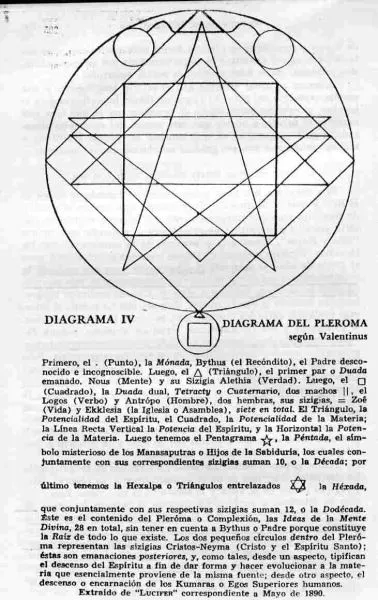

영지주의의 몰락과 생존

현실이 부자연스럽다고 느낀다면,
이 세상이 나의 고향이 아닌 것 같다고 느낀다면,
어쩌면 당신도 프네우마티코스πνευματικός — 영적 인간일지도 모르죠.
기독교의 오랜(현재진행형) 타도 대상이자, 사실 이단이라고 부르기도 힘들 정도로 전혀 다른 믿음인 영지주의gnosticism의 핵심입니다.
“영지주의”라는 이름으로 불리는 수많은 분파의 주장을 대강 취합해서 정리하자면,
이 세상을 만든 창조자 데미우르고스δημιουργός는 열등한 가짜 신입니다. 데미우르고스는 분파에 따라 “악신”이라고도 하고, “무지한 신”이라고도 하며, 둘 다라고도 합니다.
당연히 이런 신이 만든 세계는 불완전한 육체의 감옥입니다.
그러나 몇몇 사람은 감옥 바깥의 진짜 세상인 플레로마πλήρωμα, 곧 “충만계”에서 온 영혼의 불꽃을 품고 있습니다.
대부분의 인간은 죽으면 헛되이 소멸하지만, 플레로마의 씨앗을 품은 인간, 즉 영적 인간은 이 지옥 같은 감옥을 탈출해서 진정한 고향 플레로마로 돌아갈 수 있다고 하지요.
이 귀환이 영지주의가 주장하는 구원입니다.
- 플레로마로 돌아가는 방법:
- 이 세상이 허황된 감옥임을 인식하고,
- 내가 플레로마에서 왔음을 인식하고,
- 플레로마로 돌아가는 길인 그노시스γνῶσις, 곧 “영지”를 깨닫기.
여기까지 보면 현실의 부조리함과 잔혹함을 잘 설명하는 상당히 매력적인 체계입니다만… 이게 널리 퍼지지 못하고 대부분 음지의 비밀 결사로 숨어든 이유가 있습니다.
첫째는 극단적인 염세주의입니다.
이 현실은 어차피 가짜 신이 어설프게 만든 허황된 감옥이니, 굳이 현실에 참여해서 부조리함을 개혁할 이유가 없습니다.
둘째는 극단적인 선민주의입니다.
대부분의 분파에 따르면, 영적 인간은 후천적으로 정해지는 것이 아니라 전적으로 선천적으로 정해집니다.
처음부터 플레로마의 씨를 품지 못한 사람은 가짜 신이 만든 고깃덩어리에 불과하므로 구원의 여지가 없으며, 따라서 전도를 할 이유가 전혀 없습니다.
셋째는 제도 교회의 폭력입니다.
지금까지 그냥 “데미우르고스”, “열등하고 사악한 가짜 신”이라는 말만 썼는데요, 더 노골적으로 말하자면 “성경의 여호와 = 데미우르고스”입니다.
독자님이 기독교인이시라면 당연히 격분하실 것이며, 반기독교가 죽음이던 시대에는 말할 필요가 없습니다.
“일단 다 죽여라, 그러면 하느님께서 심판하실 것이다”
라는 말로 유명한 알비 십자군의 척살 대상 카타리파Cathari도 영지주의적 교리를 가졌다고 전합니다.
어찌 되었든, 영지주의가 탄압과 분화, 공동체 소멸과 재형성을 거치며 현대까지 그 사상만큼은 끈질기게 이어지는 이유는
아마도 “다른 사람들이 모르는 이 세상의 비밀을 나는 안다”는 매력적인 서사 때문이 아닐까요?